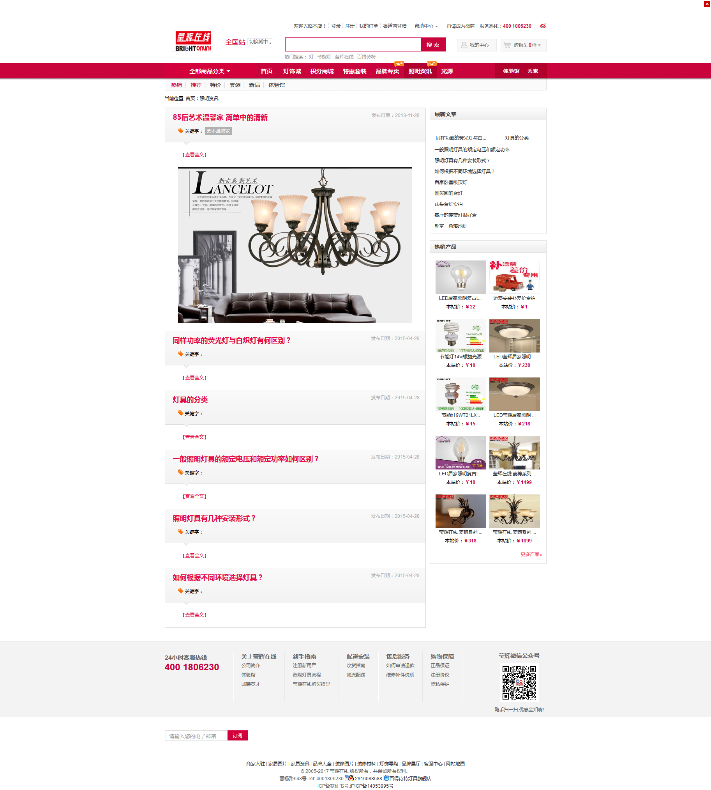
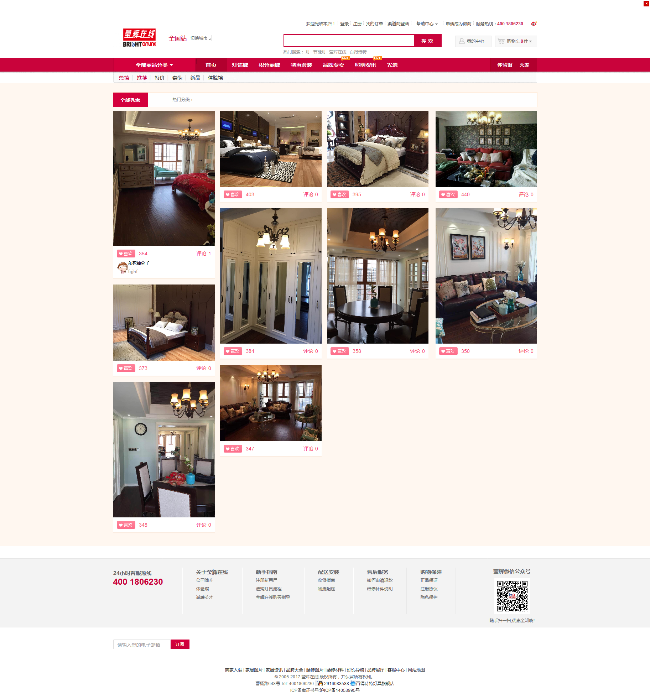
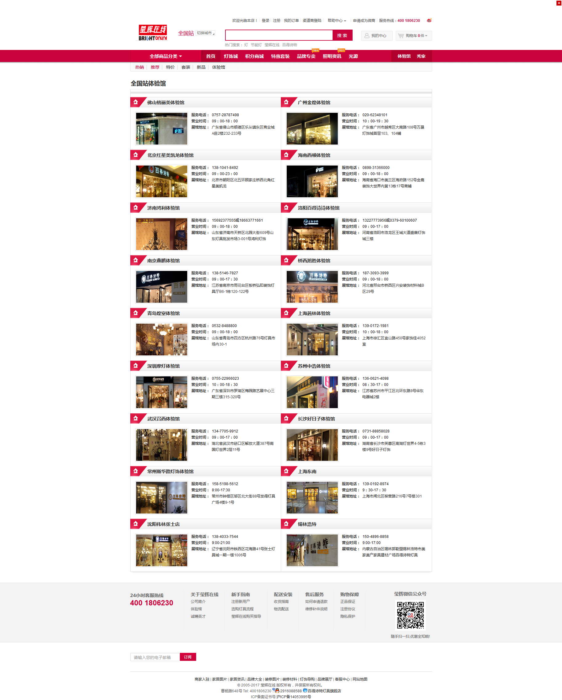

1983年，莹辉集团成立于台湾，现拥有酒店、照明两大事业群，是一个在照明领域实现全球化、多元化经营，力求精益求精，全方位发展的跨国公司。 酒店事业群辖东莞豪门大饭店、西安皇城豪门酒店两家五星级酒店，均为地区首屈一指的酒店。拥有员工1,000多人，酒店房间708间，总投资规模逾10亿元人民币，预计未来3到5年陆续会有更多的酒店投入运营。 莹辉照明旗下品牌产品备受客户信赖，并能依照客户不同的需求品味规划四大品牌（百得诗特、百照王、LED’s PRO、LED莹辉居家照明），提供客户最多样齐全的产品选择。 莹辉照明业务遍及世界100 多个国家及地区，规模化的生产设备打造莹辉坚实的制造实力，三大生产基地总面积约达20万平方米， 60条以上的生产线，自制率超过90%，年产量达千万件以上。核心业务涵盖居家照明以及酒店、户外景观、办公、百货商场、连锁店铺等商业照明。 遍及全球的百位优秀光环境设计师将莹辉的照明美学具体的落实到建筑工程与室内设计之中，此外，莹辉更设立照明体验馆，创办照明学院和设计师俱乐部，强化照明设计人才软实力，与国际接轨。目前莹辉照明已建成大中华区首家LED 照明体验馆，总面积达5000 平方米，获得专家学者以及同行业的认可并成为学术交流培训中心。 莹辉以客户为核心，整合客户各种需求，提供360度全方位照明解决方案，为客户量身打造高标准产品，提升服务效率和质量。提供从制造、设计到环保的360度服务与协助，全面保证产品的质量与安全。 作为一个力争卓越、精益求精、不断追求自我超越的企业，莹辉照明在照明领域实现了多元化、集团化、全球化经营，凭借着与国际时尚潮流、尖端科技保持同步、赋予创新意识的经营理念，力求“将照明推向登峰造极的境界”。 经营理念： 创新 竞争日渐激烈的社会只有不断的创新才能立于不败之地，而创新不仅用在有形的产品上，更用在各项制度上。如生产流 程的创新、成本节约的方法等。所有莹辉人发挥积极性，吸取新知，不断创新。 诚信 重承诺，讲信用，对待上级忠诚、对待下级诚恳、对待客户真诚，对待工作踏实 。 和谐 和谐发展才是企业成长的原动力。员工之间互相尊重、互相体谅、互相了解、互相帮助，建立生命共同体的观念，才能 携手共创企业未来。 感恩 感恩领导的知遇之恩，感恩同事的帮助与关心，感恩客户的支持与信赖， 人人心存感激之心，营造人性化的企业文化。
案例部分图片展示


